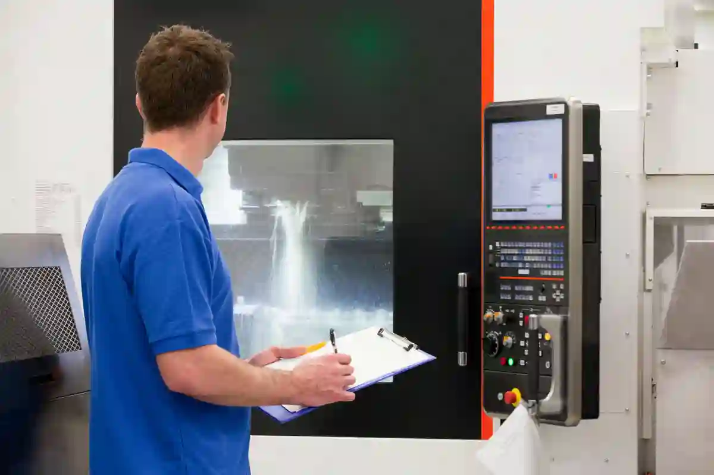
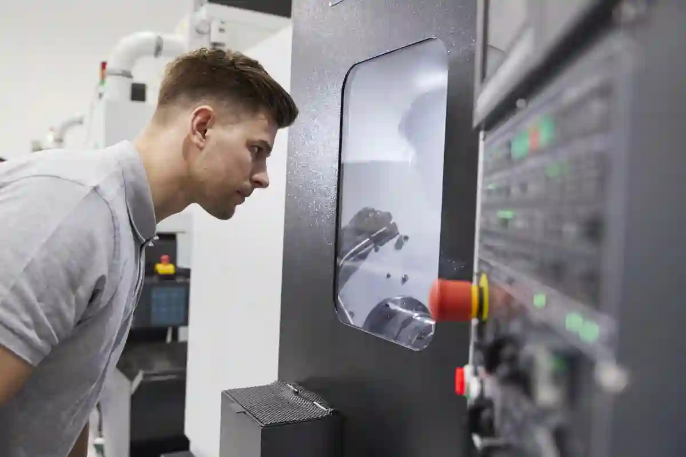

Talaşlı İmalatta Tolerans ve Ölçü Hassasiyetinin Temel Prensipleri
Talaşlı imalat süreçlerinde parçanın yalnızca nominal ölçülere sahip olması yeterli değildir. Gerçek üretim dünyasında, her ölçü belirli bir sapma aralığıyla birlikte değerlendirilir ve bu sapma aralığı talaşlı imalatta tolerans kavramı ile tanımlanır. Tolerans, bir ölçünün kabul edilebilir alt ve üst sınırlarını ifade ederken; boyutsal doğruluk, bu sınırlar içerisinde kalabilme yeteneğini temsil eder.
Modern CNC işleme ortamlarında tolerans yönetimi; makine rijitliği, kesici takım geometrisi, bağlama yöntemi ve ölçüm altyapısı gibi çok sayıda değişkenin birlikte kontrol edilmesini gerektirir. Bu nedenle tolerans konusu yalnızca teknik resimde belirtilen bir değer değil, doğrudan üretim stratejisini belirleyen kritik bir parametre haline gelmiştir.
Özellikle hassas parça üretimi gerektiren savunma, otomotiv, medikal ve kalıpçılık sektörlerinde toleranslar; maliyet, çevrim süresi ve kalite arasında hassas bir denge kurulmasını zorunlu kılar. Gereğinden dar tanımlanan toleranslar üretim süresini uzatırken, gereğinden geniş toleranslar fonksiyonel riskler doğurur.
Bu yazıda; tolerans kavramının teknik altyapısı, tolerans nedir sorusunun pratik karşılığı, CNC tolerans aralıklarının nasıl belirlendiği ve ölçüsel hassasiyetin kalite süreçlerine etkisi adım adım ele alınacaktır.
Tolerans Nedir? Talaşlı İmalatta Teknik Anlamı
Üretimde tolerans, ideal ölçü ile gerçekleşen sonuç arasındaki kabul edilebilir farkı ifade eder. tolerans ne demek sorusu, talaş kaldırma süreçlerinde makine davranışı ve çevresel etkilerle birlikte değerlendirilmelidir. Bu bağlamda talaşlı imalatta tolerans, yalnızca teorik bir sınır değil, üretilebilirliğin teknik tanımıdır.
Tolerans Nedir ve Neden Mutlak Ölçü Kullanılmaz?
Üretimde “tam ölçü” kavramı teorik bir varsayımdır. Hiçbir üretim prosesi mutlak ölçüyü garanti edemez. Bu nedenle her ölçü, belirli bir sapma payı ile birlikte tanımlanır. İşte bu sapma payına tolerans denir. Tolerans nedir sorusunun talaşlı imalat özelindeki karşılığı; parçanın fonksiyonunu kaybetmeden çalışabileceği ölçü aralığıdır.
Talaş kaldırma işlemleri sırasında ısı oluşumu, takım aşınması ve makine titreşimleri ölçü üzerinde mikron seviyesinde farklılıklara neden olur. Bu farklılıkların kontrol altına alınması için toleranslar teknik resim üzerinde açık şekilde belirtilir.
Tolerans ile Ölçüsel Hassasiyet Arasındaki Fark
Tolerans ve ölçüsel hassasiyet kavramları sıklıkla birbirine karıştırılır. Tolerans, izin verilen sınırları tanımlar; hassasiyet ise üretimin bu sınırlar içinde kalabilme başarısını ifade eder. Yani tolerans bir tanım, hassasiyet ise bir üretim performansıdır.
Örneğin ±0,01 mm tolerans verilen bir ölçüde, sürekli ±0,002 mm sapma ile üretim yapılabiliyorsa, proses yüksek boyutsal doğruluğa sahiptir. Bu fark özellikle seri üretim yapan CNC atölyelerinde kalite istikrarının temel göstergelerinden biridir.
Talaşlı İmalatta Tolerans Türleri
Talaşlı imalatta tolerans türleri, ölçü doğruluğunu farklı açılardan kontrol etmeye yönelik yaklaşımlar sunar. Boyutsal toleranslar temel ölçülere odaklanırken, şekil ve konum ilişkileri farklı yöntemlerle ele alınır. Bu ayrım, parçanın yalnızca ölçüsel değil, fonksiyonel olarak da doğru çalışmasını sağlar.
Boyutsal Toleranslar ve CNC Uygulamaları
Boyutsal toleranslar; çap, uzunluk, genişlik ve kalınlık gibi temel ölçülerin kabul edilebilir sınırlarını belirler. CNC tezgâhlarında cnc tolerans aralıkları, kullanılan makine sınıfına ve işlenen malzemeye göre değişkenlik gösterir.
Alüminyum gibi kolay işlenebilir malzemelerde daha dar toleranslar elde edilebilirken, paslanmaz çelik veya titanyum gibi zor işlenen alaşımlarda bu aralıklar genişletilmek zorunda kalabilir. Bu noktada tolerans belirleme süreci, yalnızca çizim değil aynı zamanda proses mühendisliği konusudur. Bu noktada tolerans kavramının genel çerçevesi için Talaşlı İmalat Blog sayfasında yer alan temel üretim yaklaşımlarını incelemek, konunun bütünsel anlaşılması açısından faydalıdır.
Geometrik Toleranslar ve Fonksiyonel Hassasiyetin Yönetimi
Parçaların montaj ve çalışma performansı, yalnızca ölçü doğruluğuna değil geometrik ilişkilere de bağlıdır. Bu noktada geometrik tolerans, yüzeyler ve eksenler arasındaki konum doğruluğunu tanımlar. Fonksiyonel hassasiyetin korunması, özellikle karmaşık montajlarda kritik önem taşır.

Geometrik Tolerans Kavramı (GD&T) Neyi İfade Eder?
Boyutsal toleranslar yalnızca ölçünün ne kadar sapabileceğini tanımlar; ancak parçanın şekil, konum ve yönelim doğruluğunu garanti etmez. Bu noktada devreye geometrik doğruluk kavramı girer. GD&T (Geometric Dimensioning and Tolerancing), parçanın fonksiyonel çalışmasını etkileyen geometrik özelliklerin kontrol altına alınmasını sağlar.
Örneğin bir mil çapı tolerans dahilinde olsa bile eksen kaçıklığı varsa yataklama problemleri ortaya çıkar. Aynı şekilde bir yüzey ölçü olarak doğru olabilir; fakat paralellik veya düzlemsellik hatası montaj sırasında sorun yaratır. Bu nedenle hassas parça üretimi gerektiren projelerde geometrik toleranslar, boyutsal toleranslardan daha kritik hale gelir.
GD&T Sembollerinin Talaşlı İmalattaki Pratik Karşılığı
Teknik resimlerde kullanılan geometrik doğruluk sembolleri, CNC operatörüne ve kalite birimine net bir üretim dili sunar. En yaygın kullanılan geometrik tolerans türleri şunlardır:
- Düzlemsellik (Flatness): Yüzeyin tamamının belirli bir tolerans bandı içinde kalması
- Paralellik (Parallelism): İki yüzeyin veya eksenin birbirine paralel kalması
- Diklik (Perpendicularity): 90° açı ilişkisinin korunması
- Konum (Position): Delik veya mil ekseninin referans datuma göre yeri
- Eşmerkezlilik (Concentricity): Dönen parçaların balans doğruluğu
Bu toleranslar, ölçüm aşamasında CMM (Koordinat Ölçüm Cihazı) veya hassas mastarlar ile kontrol edilir. Burada amaç, yalnızca ölçü tutturmak değil; parçanın çalışma koşullarında fonksiyonel kararlılık sağlamasıdır.
CNC Tolerans Aralıkları Nasıl Belirlenir?
Üretimde kabul edilebilir sapma sınırları belirlenirken makine kabiliyeti temel alınır. CNC (Computer Numeric Control) tolerans aralıkları, kullanılan tezgâhın stabilitesi, takım davranışı ve ölçüm altyapısı ile doğrudan ilişkilidir. Teorik olarak mümkün değerler, seri üretimde sürdürülebilir olmayabilir.

CNC Tolerans Aralıkları ve Makine Kabiliyeti
Her CNC tezgâhı teorik olarak aynı toleransları veremez. CNC tolerans aralıkları; makinenin rijitliği, lineer kızak yapısı, termal stabilitesi ve kontrol ünitesinin çözünürlüğüne bağlıdır. Genel bir çerçeve çizmek gerekirse:
- Standart CNC frezeleme: ±0,05 mm – ±0,02 mm
- Hassas CNC işleme: ±0,01 mm – ±0,005 mm
- Ultra hassas uygulamalar: ±0,002 mm ve altı (özel koşullarda)
Ancak burada kritik nokta, toleransın sürdürülebilir olmasıdır. Tek seferlik ölçü tutturmak değil, seri üretimde aynı hassasiyetin korunması esastır. Bu nedenle tolerans belirleme süreci, üretici firma ile tasarımcı arasında mutlaka teknik bir değerlendirme gerektirir.
Bu bağlamda, toleransların nasıl sınıflandırıldığına dair resmî bilgi için aşağıdaki kaynaktan faydalanılabilir: Genel tolerans standartları, ISO 2768-1:1989 – General tolerances — Part 1: Tolerances for linear and angular dimensions without individual tolerance indications adresinde yer alan TS EN ISO 2768 standardı kapsamında tanımlanmaktadır. Geometrik ürün özellikleri (GPS) — Boyutsal toleranslama — Doğrusal ve açısal boyutların genel spesifikasyonu için tolerans sınırları ise ISO/DIS 2768 – Geometrical product specifications (GPS) — Dimensional tolerancing — Tolerance limits for general specification of linear and angular sizes adresinde yer almaktadır.
Bu standart, teknik resimde tolerans belirtilmediği durumlarda geçerli olacak genel tolerans aralıklarını belirleyerek hem tasarımcı hem de üretici için ortak bir referans oluşturur.
Tolerans – Maliyet – Kalite Dengesi
Tolerans seviyeleri doğrudan üretim maliyetini ve kalite algısını etkiler. Gereğinden dar sınırlar süreyi uzatırken, geniş tanımlar fonksiyonel risk oluşturur. talaşlı imalat tolerans kararları, parçanın gerçek kullanım gereksinimleri dikkate alınarak belirlendiğinde bu denge sağlanabilir.
Gereğinden Dar Toleransın Üretime Etkisi
Toleranslar gereğinden dar tanımlandığında, üretim süresi uzar, takım aşınması hızlanır ve hurda oranı artar. Özellikle seri üretimde bu durum, parça başı maliyeti ciddi biçimde yükseltir. Bu nedenle talaşlı imalatta tolerans belirlenirken, parçanın gerçek fonksiyonu mutlaka dikkate alınmalıdır.
Fonksiyonel olarak ±0,05 mm toleransla çalışabilecek bir parça için ±0,01 mm tolerans talep etmek, teknik olarak mümkün olsa bile ticari açıdan rasyonel değildir. Bu dengeyi doğru kurmak için CNC Üretimde Tolerans ve Hassasiyet Yönetimi başlıklı içerikte yer alan proses optimizasyonu yaklaşımları yol gösterici olacaktır.
Ölçüsel Hassasiyetin Kalite Kontrol Süreçlerindeki Rolü
Kalite kontrolün etkinliği, üretim sürecinin ne kadar tutarlı olduğunu gösterir. Bu tutarlılığın temel göstergelerinden biri boyutsal doğruluk seviyesidir. Sürekli ve tekrarlanabilir sonuçlar, prosesin kontrol altında olduğunu ve sapmaların yönetilebilir düzeyde kaldığını gösterir.

Ölçüsel Hassasiyet Neden Üretim Performansının Göstergesidir?
Üretimde toleransların tanımlanması tek başına yeterli değildir; asıl belirleyici unsur, bu toleransların süreklilikle karşılanabilmesidir. İşte bu noktada ölçüsel hassasiyet, talaşlı imalat süreçlerinde kalite performansının doğrudan göstergesi haline gelir. Aynı parçanın seri üretimde her çevrimde benzer sapmalarla üretilmesi, prosesin kontrol altında olduğuna işaret eder.
Ölçüdeki hassasiyet; makine kabiliyeti (Cp, Cpk), takım ömrü yönetimi ve operatör deneyimiyle yakından ilişkilidir. Toleranslar daraldıkça, ölçüm sıklığı ve ölçüm yöntemlerinin doğruluğu kritik hale gelir. Bu nedenle kalite kontrol, üretimin sonunda yapılan bir doğrulama değil; üretimin ayrılmaz bir parçasıdır.
Talaşlı İmalatta Kullanılan Ölçüm Yöntemleri
Üretimde toleransların doğrulanması, kullanılan ölçüm yöntemlerine bağlıdır. Temel ekipmanlar hızlı kontrol sağlarken, ileri sistemler karmaşık geometrilerin analizine olanak tanır. Ölçüm yönteminin seçimi, hedeflenen doğruluk seviyesi ve parça karmaşıklığına göre yapılmalıdır.
Mastarlar, Kumpaslar ve Mikrometreler
Temel ölçüm ekipmanları, hızlı ve pratik kontrol sağlar. Kumpas ve mikrometreler, özellikle ±0,02 mm ve üzeri toleransların kontrolünde yeterlidir. Ancak bu ekipmanların düzenli kalibrasyonu yapılmadığında ölçüsel hatalar kaçınılmaz olur. Talaşlı imalatta tolerans yönetiminde ölçüm cihazının doğruluğu, makine hassasiyeti kadar önemlidir.
CMM (Koordinat Ölçüm Cihazı) ile Hassas Kontrol
Geometrik toleransların ve karmaşık yüzeylerin kontrolü için CMM sistemleri vazgeçilmezdir. CMM, parçanın referans datumlarına göre üç boyutlu ölçümünü yaparak geometrik tolerans sapmalarını net biçimde ortaya koyar. Özellikle konum, paralellik ve eşmerkezlilik gibi toleranslar, manuel ölçümle güvenilir şekilde doğrulanamaz. Türkiye’de ölçüm, muayene ve kalite altyapısı hakkında teknik rehberler için UME – Ulusal Metroloji Enstitüsü – TÜBİTAK UME yayınları güvenilir bir referans sunar.
Teknik Resimde Toleransın Teklif ve Fiyatlandırmaya Etkisi
Teknik resimde toleransların net biçimde tanımlanmaması, üretici açısından belirsizlik yaratır. Bu belirsizlik, teklif sürecinde risk payı olarak fiyatlara yansıtılır. Açık tolerans bilgileri, üretim planlamasını kolaylaştırır ve daha öngörülebilir maliyet hesaplaması sağlar.
Tolerans Bilgisi Olmayan Çizimler Neden Risklidir?
Teknik resimde tolerans belirtilmediğinde, üretici genel tolerans standartlarına göre yorum yapmak zorunda kalır. Bu durum, teklif sürecinde belirsizlik yaratır ve maliyetlerin gereğinden yüksek hesaplanmasına neden olabilir. Özellikle cnc tolerans aralıkları net tanımlanmamış projelerde, üretici risk payını fiyata yansıtmak zorunda kalır.
Dar toleranslı bölgelerin çizimde açıkça belirtilmesi, üreticinin proses planlamasını doğru yapmasını sağlar. Bu da hem daha rekabetçi fiyat hem de daha öngörülebilir teslim süresi anlamına gelir. Bu konunun teklif süreçlerine etkisini detaylı görmek için CNC İmalatta Teknik Çizim Teklifi Nasıl Etkiler? başlıklı içerikte yer alan örnek senaryolar yol göstericidir.
Kalite Kontrol ile Tolerans Sürekliliğinin Sağlanması
Tolerans sürekliliği, yalnızca son kontrolde yapılan ölçümlerle sağlanamaz. Proses içi kontroller ve düzenli geri besleme, sapmaların erken aşamada tespit edilmesini mümkün kılar. Bu yaklaşım, seri üretimde kalite dalgalanmalarının önüne geçer.
Proses İçi Ölçüm ve Geri Besleme
Kalite kontrol yalnızca son kontrolde yapılmamalıdır. Proses içi ölçüm, sapmaların erken aşamada tespit edilmesini sağlar. Bu yaklaşım, özellikle hassas parça üretimi gerektiren işlerde hurda oranını ciddi şekilde düşürür.
Ölçüm sonuçlarının operatör ve mühendislik ekibiyle anlık paylaşılması, takım telafilerinin zamanında yapılmasına olanak tanır. Böylece tolerans dışına çıkmadan üretim sürdürülebilir hale gelir. Bu yaklaşımın uygulamadaki karşılığını görmek için Talaşlı İmalatta Kalite Kontrol Nasıl Yapılır? başlıklı içerikte yer alan ölçüm stratejileri incelenebilir.
Toleransların Montaj, Fonksiyon ve Ömür Üzerindeki Etkisi
Parçalar tekil olarak uygun ölçülerde olsa bile montaj sırasında uyumsuzluk yaşanabilir. Bu durum, fonksiyonel sorunlara ve erken aşınmaya yol açar. Özellikle çok bileşenli sistemlerde tolerans ilişkilerinin doğru yönetilmesi, ürün ömrünü doğrudan etkiler.
Montaj Uyumunda Talaşlı İmalatta Toleransın Rolü
Montaj aşamasında yaşanan problemler, çoğu zaman üretim sırasında fark edilmeyen tolerans uyumsuzluklarından kaynaklanır. Parçalar tekil olarak tolerans içinde olabilir; ancak bir araya geldiklerinde fonksiyonel boşluklar ya da sıkı geçmeler ortaya çıkabilir. Bu durum, özellikle çok bileşenli sistemlerde tolerans zinciri (tolerance stack-up) etkisini gündeme getirir.
Talaşlı imalatta tolerans belirlenirken yalnızca tek parçanın ölçüsü değil, montajdaki tüm parçaların birbiriyle olan ilişkisi dikkate alınmalıdır. Aksi halde montaj sırasında zorlanma, aşırı sürtünme veya erken aşınma gibi problemler kaçınılmaz olur.
Fonksiyonel Boşluklar ve Çalışma Performansı
Fonksiyonel boşluklar, hareketli parçalarda performansı doğrudan etkiler. Gereğinden geniş boşluklar titreşime ve gürültüye neden olurken, gereğinden dar boşluklar kilitlenme riskini artırır. Bu denge, ölçüsel hassasiyet ile fonksiyonel gereksinimlerin birlikte değerlendirilmesiyle sağlanır.
Örneğin yataklama yüzeylerinde mikron seviyesindeki sapmalar bile, sistemin çalışma ömrünü ciddi biçimde kısaltabilir. Bu nedenle toleranslar, yalnızca üretilebilirlik değil; kullanım koşulları göz önünde bulundurularak tanımlanmalıdır.
Sektörel Uygulamalarda Tolerans Yaklaşımları
Her sektör, toleranslara farklı öncelikler yükler. Seri üretim odaklı alanlarda değiştirilebilirlik öne çıkarken, hassas parça üretimi gerektiren uygulamalarda geometrik doğruluk ön plandadır. Bu nedenle tolerans stratejileri, sektörün teknik beklentilerine göre şekillendirilmelidir.
Otomotiv ve Savunma Sanayinde Hassasiyet Beklentisi
Otomotiv ve savunma sanayinde toleranslar, seri üretimde dahi dar aralıklarda tutulur. Buradaki temel amaç, parçalar arası değiştirilebilirliği ve güvenilirliği sağlamaktır. Özellikle güvenlik kritik bileşenlerde geometrik tolerans kontrolleri vazgeçilmezdir.
Medikal ve Kalıpçılıkta Hassas Parça Üretimi
Medikal implantlar ve kalıpçılık uygulamalarında toleranslar, çoğu zaman mikron seviyesinde tanımlanır. Burada yüzey kalitesi ve geometrik doğruluk, boyutsal toleranslardan daha baskın hale gelir. Hassas parça üretimi, ileri ölçüm teknikleri ve sıkı kalite kontrol gerektirir.
Bu sektörlerde toleransların doğru yönetimi, ürün güvenliği ve regülasyonlara uyum açısından hayati önem taşır. Geometrik toleransların tanımı ve sembol kullanımı için uluslararası referans olan ISO 1101 standardına ilişkin özet bilgilere Geometrik ürün özellikleri (GPS) — Geometrik toleranslama — Şekil, yönelim, konum ve salınım toleransları – ISO 1101:2017 – Geometrical product specifications (GPS) — Geometrical tolerancing — Tolerances of form, orientation, location and run-out adresinden erişilebilir. Bu standart, teknik resimlerde geometrik toleransların küresel ölçekte tutarlı biçimde kullanılmasını sağlar.
Yanlış Tolerans Seçiminin Sahadaki Sonuçları
Yanlış tolerans tanımları, üretim sonrası kullanım aşamasında ciddi sorunlar doğurabilir. Montaj zorlukları, beklenmeyen arızalar ve bakım maliyetleri bu hataların sonucudur. Tolerans kararları alınırken saha koşulları ve kullanım senaryoları mutlaka dikkate alınmalıdır.
Üretim, Maliyet ve Teslim Süresi Riskleri
Yanlış tanımlanmış toleranslar, üretimde beklenmeyen duruşlara ve revizyonlara yol açar. Gereksiz dar toleranslar, takım ömrünü kısaltırken; aşırı geniş toleranslar sahada arıza riskini artırır. Bu durum, hem kalite hem de marka güvenilirliği açısından ciddi kayıplara neden olabilir.
Toleransların işlevsel gereksinimlere göre optimize edilmesi, toplam sahip olma maliyetini düşürürken teslim sürelerinin öngörülebilirliğini artırır.
Tolerans Yönetiminde Hizmet ve Ölçüm Altyapısının Önemi
Etkili tolerans yönetimi, güçlü bir ölçüm ve kontrol altyapısı ile mümkündür. Kalibrasyon, proses izleme ve raporlama sistemleri bu altyapının temel bileşenleridir. Bu yapı sayesinde tanımlanan toleranslar uzun vadede korunabilir.
Ölçüm ve Kontrol Hizmetleri ile Süreklilik
Toleransların sürdürülebilir biçimde karşılanması, güçlü bir ölçüm ve kontrol altyapısı gerektirir. Bu altyapı; proses içi ölçüm, istatistiksel proses kontrolü ve düzenli kalibrasyon uygulamalarını kapsar. CNC tolerans aralıkları ancak bu disiplinle uzun vadede korunabilir. Bu noktada, tolerans sürekliliğinin sağlanması için Kalite Kontrol ve Ölçüm hizmet sayfasında sunulan ölçüm altyapısı ve kontrol yöntemleri kritik rol oynar.
Tolerans Belirlemede Doğru Strateji – En İyi Uygulamalar
Doğru tolerans stratejisi, fonksiyonel ihtiyaçlarla üretim kabiliyetini dengeler. Her ölçü için en dar sınırı hedeflemek yerine, gerekli hassasiyeti tanımlamak esastır. Bu yaklaşım kaliteyi korurken gereksiz maliyet artışlarını engeller.
Fonksiyon Odaklı Tolerans Tanımı
Tolerans belirlemenin en sağlıklı yolu, parçanın gerçek fonksiyonunu esas almaktır. Yük taşıyan, hareket eden veya sızdırmazlık sağlayan yüzeylerde toleranslar daha kritik iken; estetik veya ikincil yüzeylerde geniş aralıklar kabul edilebilir. Bu yaklaşım, talaşlı imalatta tolerans kararlarını teknik gerekçelerle temellendirir ve gereksiz maliyeti önler.
Proses Yeteneğine Göre CNC Tolerans Aralıkları
Tasarım aşamasında belirlenen toleransların, üretim hattının gerçek kabiliyetiyle uyumlu olması gerekir. Makine, takım, bağlama ve ölçüm zinciri birlikte değerlendirilmeden tanımlanan toleranslar, seri üretimde sürdürülemez. Bu nedenle cnc tolerans aralıkları, Cp/Cpk hedefleriyle birlikte planlanmalıdır.
Uygulamalı Değerlendirme – Ölçüsel Hassasiyetin Sürdürülebilirliği
Sürdürülebilir üretim performansı, sürekli iyileştirme anlayışıyla sağlanır. Ölçüm verilerinin analiz edilmesi ve süreçlere geri beslenmesi, ölçüsel hassasiyet seviyesinin korunmasına yardımcı olur. Bu yöntem, uzun vadeli kalite hedeflerinin gerçekleştirilmesini destekler.
Ölçüm – Geri Besleme – Düzeltme Döngüsü
Sürdürülebilir ölçüsel hassasiyet, tek seferlik ayarlardan değil; sürekli geri besleme döngüsünden doğar. Proses içi ölçüm, istatistiksel takip ve zamanında telafi uygulamaları; tolerans dışına çıkmadan üretimi mümkün kılar. Bu yaklaşım, hassas parça üretimi projelerinde kalite sürekliliğinin anahtarıdır.
Geometrik Toleransların Sahadaki Karşılığı
Geometrik tolerans uygulamaları, montaj uyumu ve fonksiyonel performans üzerinde doğrudan etkilidir. GD&T’nin doğru kullanımı; titreşim, gürültü ve erken aşınma risklerini azaltır. Sahada yaşanan problemlerin önemli bir kısmı, geometrik ilişkilerin yetersiz tanımlanmasından kaynaklanır.
Sonuç – Talaşlı İmalatta Toleransın Stratejik Önemi
Talaşlı imalatta tolerans, yalnızca teknik resimdeki bir değer değil; maliyet, kalite ve teslim süresini birlikte yöneten stratejik bir karardır. Doğru belirlenen toleranslar; üretilebilirliği artırır, kaliteyi güvence altına alır ve toplam sahip olma maliyetini düşürür. Toleransların fonksiyonel gereksinimler, proses yeteneği ve ölçüm altyapısı ile birlikte ele alınması; rekabetçi ve sürdürülebilir üretimin temelini oluşturur.